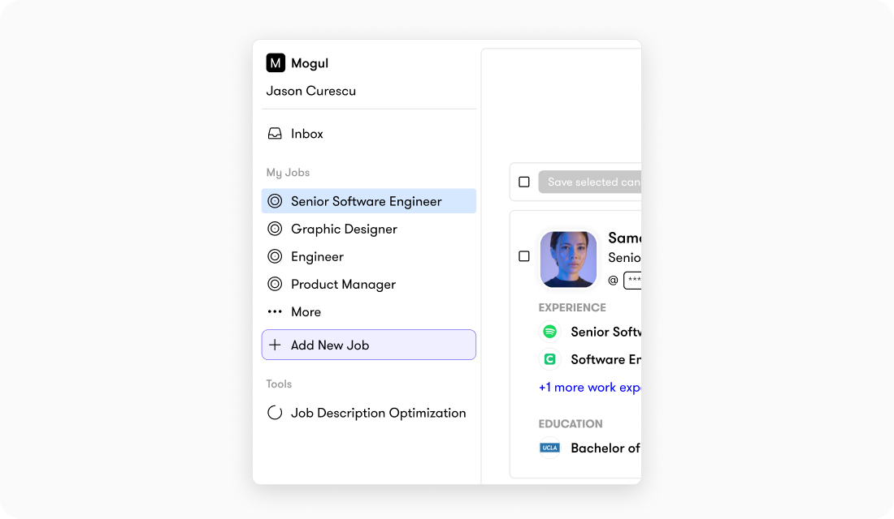
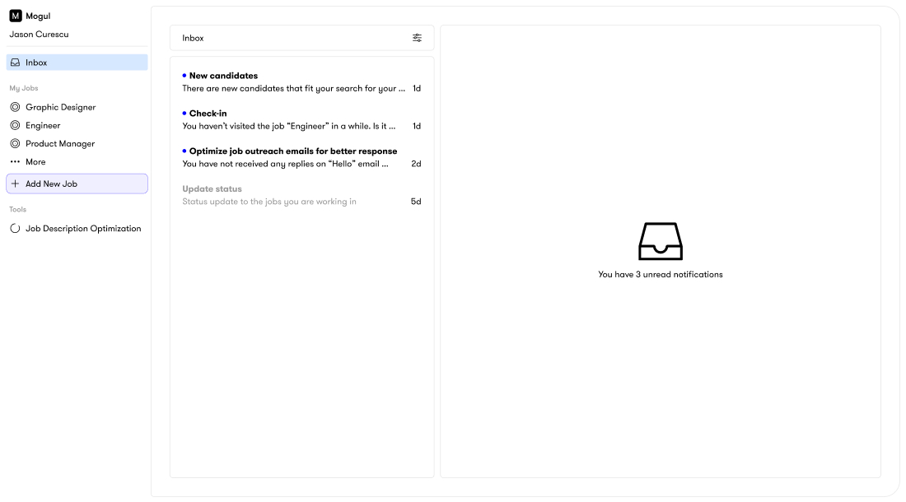
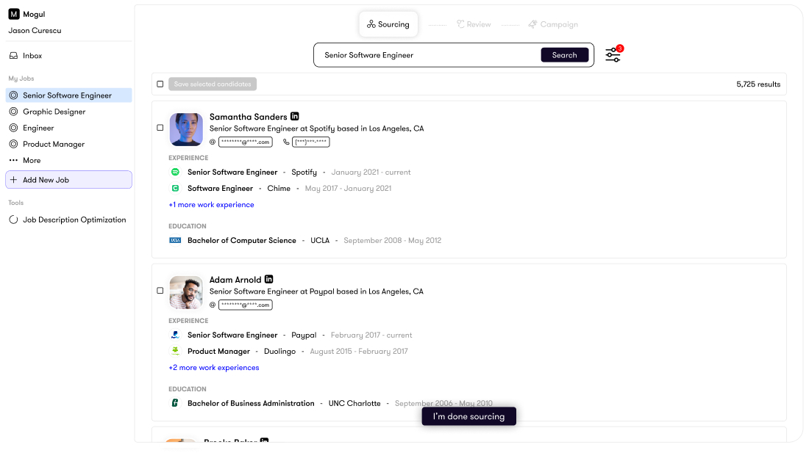
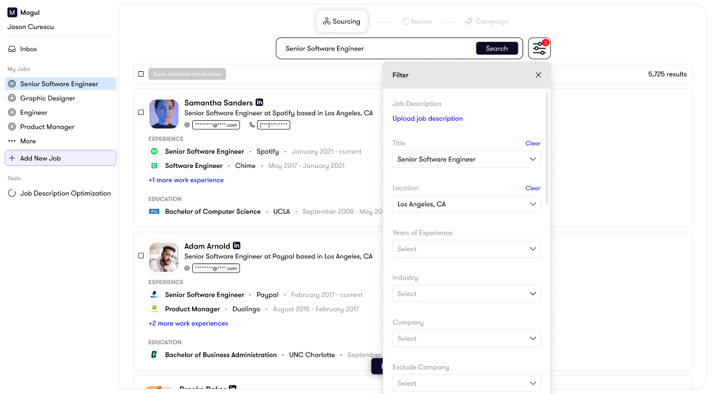
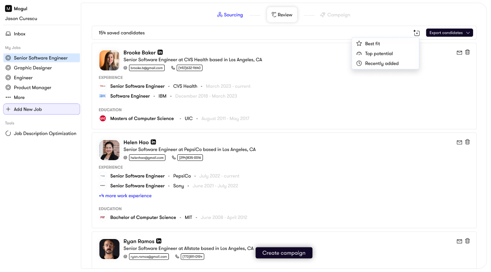
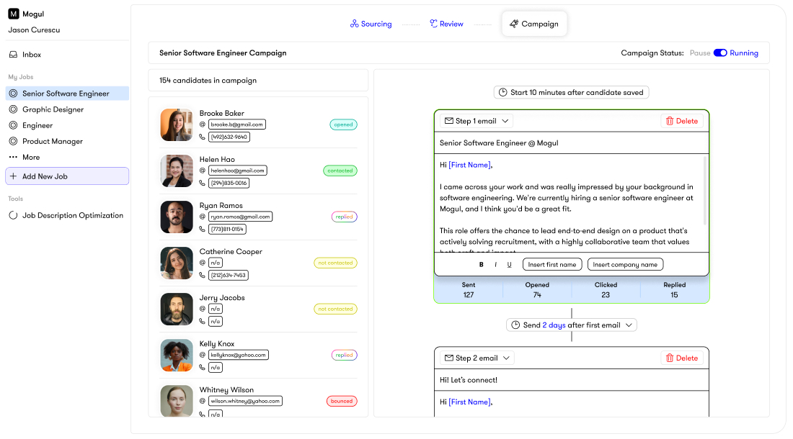

Mogul Recruiter Tool
- Led end-to-end product redesign
- Conducted user research and testing
- Audited and mapped existing workflows
- Defined new job-centric experience
- Partnered with engineers for launch
- Increased product engagement by 40%
- 15% more client renewals in the first 3 months after launch
- Simplified navigation and workflows
- Boosted recruiter confidence and satisfaction
Over the years, we kept adding features to the Mogul Recruiter. New sourcing tools, AI resume ranking, a built-in CRM, and eventually an entire ATS. Each feature made sense on its own, but together the product started to feel like a Frankenstein. Recruiters weren't sure where to start a search, and there were too many ways to do the same thing.
Our Client Success team started hearing more and more complaints. Clients were telling us the software was confusing and some were switching to other recruitment tools instead. That was the signal that we needed to take a hard look at what was going on.
I started by mapping out every feature and workflow in the recruiter software. What I found was a mess. There were multiple paths leading to the same screens, wires getting crossed everywhere, and too many clicks to do simple things.
The biggest issue was sourcing. Recruiters had to go through 4 different screens just to start a search, filling out info along the way that slowed them down. On top of that, there were two ways to start sourcing: you could create a job first and source for it, or you could just start a sourcing project with no job attached. This created confusion because when recruiters went back to their projects later, they couldn't always tell which job they were sourcing for.
TOP DIVERSE
TALENT?
I talked with our Client Success team, our internal recruitment team at Mogul, and both high-usage and low-usage clients. The same theme kept coming up: people just wanted a clear, simple way to go from "I need to fill this role" to "here are my candidates." The product was getting in the way of that.
The other big finding was around our ATS. We had just built an entire applicant tracking system into the recruiter, but it was completely disconnected from the sourcing experience. You had to source candidates in one section, then click over to the ATS in the menu bar and find your project there. Almost no one was using it. The data showed that recruiters were just exporting candidates to their own external ATS systems instead.
Two paths came out of the research. The first was a quicker fix: redesign the navigation to make it clearer where to start the sourcing process. It would help but wouldn't solve the deeper issues. The second was a full redesign that rethought the entire workflow from the ground up.
I pushed for the full redesign. The product had been built without a deep understanding of how recruiters actually work, and layering more features on top of a broken foundation wasn't going to fix that. The CTO and CEO agreed. We all felt the software needed a reset.
The core idea behind the new design was making everything job-centric. Instead of having sourcing, candidate review, outreach, and tracking scattered across different sections, everything would live under one job. You open a job, and all the tools you need for that role are right there: sourcing, pipeline, campaigns, and progress tracking. One workspace instead of a scattered experience.
I also proposed integrating the ATS directly into the sourcing workflow so it didn't feel like a separate tool. Recruiters would move candidates through stages naturally as part of the process rather than having to jump to a different section. For recruiters who still preferred their own ATS, I kept the option to export candidates.
The CEO initially pushed back on folding the ATS into the workflow since we had just built it as a standalone feature. But I was able to show the data: recruiters simply weren't using it the way it was set up. When I presented the new integrated approach, she saw that it was a much better solution and gave the green light.
client's careers page
description → Create
This wasn't a "stop everything and redesign" situation. I worked on the redesign in my free time over about 6 months, building it out piece by piece with the CTO. I'd share prototypes with the CTO and CEO first, and if they liked what they saw, I'd bring it to Client Success and our internal recruitment team for feedback.
Client Success was a huge help here because they knew our clients' pain points inside and out. They could look at a mockup and tell me right away if it would land well or cause confusion. The team also shared some of the mockups with clients during renewal calls, which actually helped keep some clients on board while we were building the new version.
I also tested the new workflows with our internal recruitment team before launch to make sure the simplified flows actually felt better in practice, not just on paper.
Simplified Navigation. The old menu had multiple entry points that all led to the same place, which made it hard for recruiters to know where to start. The new menu strips all of that away. Now when recruiters log in, they see their active jobs and a clear option to create a new one. No more guessing which path to take. You pick a job or create one, and everything you need for that role, sourcing, reviewing, outreach, and tracking, all lives inside it.

Centralized Dashboard. The new inbox gives recruiters a clear overview of everything happening across their jobs. New candidates, check-in reminders for inactive projects, status updates, and outreach performance all live in one place.

Simplified Search. I stripped the search experience down to focus on what recruiters actually look at first: current role and work history. Candidate bios still power the search results in the background, but hiding them from the main view made scanning candidates much faster.

Streamlined Filters. I redesigned the filters with a simple icon-based entry point and more intentional spacing, making it easier to quickly narrow results without feeling overwhelmed.

Smart Review Stage. After sourcing, recruiters move into a review stage designed for speed. Smart sort options like "best fit" and "top potential" help prioritize candidates, and recruiters can email or remove candidates directly from the interface without extra clicks.

Integrated Campaigns. Recruiters can build and schedule personalized email and SMS campaigns right within each job, with built-in analytics to track what's working. This keeps all candidate activity in one place instead of bouncing between tools.

After launch, Client Success held workshops with our clients to walk them through the new experience. The feedback was overwhelmingly positive.
We tracked everything through our analytics dashboard: candidates sourced, saved, searches run, projects created, and time spent in the platform. The data told a clear story. Product engagement increased by 40%, and in the first 3 months after launch, we saw 15% more client renewals compared to the same period the year before.
The recruiter that used to confuse people was now something clients actually enjoyed using.
If I could go back, I would have found ways to bring AI into the outreach process earlier. The email and campaign tools we built were solid, but writing personalized messages to each candidate was still very manual. I would have loved to build in a way to generate personalized outreach using AI so that each message felt tailored to the candidate rather than templated. That would have saved recruiters a lot of time and made their outreach stand out more.